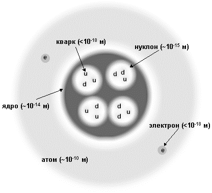

|

Б.С. Ишханов, Э.И. Кэбин
Физика ядра и частиц,
XX век
Web-версия учебного пособия Б.С. Ишханов, Э.И. Кэбин "Физика ядра и частиц.
ХХ век" М., Изд-во Московского университета. 2000. В Web-версии учтены
современные ядерные данные.
Публикацию подготовил Э.Кэбин.

|